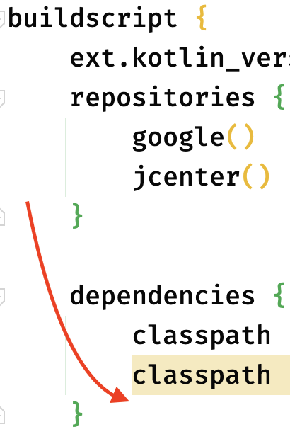
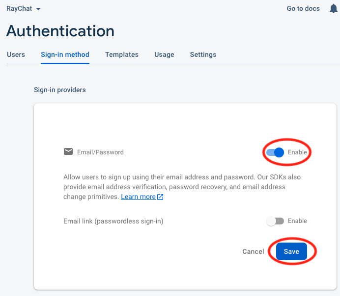

19 Firebase Cloud Firestore¶
When you want to store information for hundreds of people, you can’t store it on one person’s phone. It has to be in a storage cloud. You could hire a team of developers to design and implement a backend system that connects to a database via a set of APIs. This could take months of development time. Wouldn’t it be great if you could just connect to an existing system?
This is where Firebase Cloud Firestore comes in. You no longer need to write complicated apps that use thousands of lines of async tasks and threaded processes to simulate reactiveness. With Cloud Firestore, you’ll be up and running in no time.
In this chapter, you will create an instant messaging app called RayChat. While creating RayChat, you’ll learn:
- About Cloud Firestore and when to use it.
- The steps required to set up a Firebase project with the Cloud Firestore.
- How to connect to, query and populate the Cloud Firestore.
- How to use the Cloud Firestore to build your own instant messaging app.
Getting started¶
First, open the starter project from this chapter’s project materials and run flutter pub get.
Next, build and run your project on an Android device. Don’t worry, you’ll run on iOS later.
You’ll see the RayChat home page:

Right now, your app doesn’t do much. You’ll need to add your own Cloud Firestore to send and receive messages.
What is a Cloud Firestore?¶
Google gives you the option for two real-time NoSQL document databases within the Firebase suite of tools: Realtime Database and Firebase Cloud Firestore. But what’s the difference?
Firestore is Google’s newest offering. Google created Firestore to better cope with large-scale software with deeply layered data. You can query data and receive it separately, creating a truly elastic environment that copes well as your data set grows.
Realtime Database, though still a document-driven NoSQL database, returns data in JSON format. When you query a tree of JSON data, it includes all of its child nodes. To keep your transactions light and nimble, you have to keep your data hierarchy as flat as possible.
Both of these solutions are great, so it’s important to know when to use them. Here are some key metrics for each database:
Firebase Cloud Firestore
- Has a free plan, but charges per transaction and to a lesser extent for storage used, past the limit.
- It’s easy to scale.
- Can handle complex, deeply layered data sets and relations.
- Supports indexed queries with compound sorting and filtering.
- Available for mobile and web.
Realtime Database
- Also has a free plan, but charges for storage used, not for queries made, past the limit.
- Extremely low latency.
- Easy to store simple data using JSON.
- You can either sort or filter on a query but not both.
In this chapter, you’ll be using Cloud Firestore.
Note: Check out the full list of comparisons on Google’s product page https://cloud.google.com/products/databases. And have a look at our Cloud Firestore tutorial https://www.raywenderlich.com/7426050-firebase-chapter-for-flutter-getting-started#toc-anchor-005 if you’re looking to explore the Firestore solution.
Setting up a Google project and Database¶
Before you can use any of Google’s cloud services, you have to set up a project on the Firebase Console; then you can create your Cloud Firestore and manage it directly from the console. You’ll use the free tier.
First, go to https://console.firebase.google.com. Then, click Create a project:
Name your project RayChat and click Continue:
Disable Google Analytics since you don’t need it for this chapter and click Create project at the bottom of the page:
Give Google a minute to load and then your project will be ready.
Click Continue.
To create your Cloud Firestore, go back to your Firebase home page and select See all Build features:
Scroll down and click Cloud Firestore:
Then select Create Database.
Select Start in test mode and click Next.
This ensures you can read and write data easily while developing your app.
Select your region for your Cloud Firestore location and then click Enable:
You’ll see a step displayed while your database is being created:
After your database has been created, you’ll be redirected to your database console. You can come back to this page later to see your app data in real time:
Next, you’ll connect your Flutter app with your new Google project.
Creating Google Services files¶
Google uses a config file that contains all of the API keys for your Firebase project. You’ll need to create a config file for your Android and iOS apps individually. You’ll start with Android.
Setting up Android¶
If you only see icons in the left margin, click on the arrow at the bottom of the list to expand the menu.
Click on the Project Overview button and make sure you have RayChat selected as your active project. Then click the Android symbol:
This takes you to a helper page for creating your Android config file. The Android package name is typically your app name in reverse-DNS format.
Add com.raywenderlich.RayChat in the package name field and RayChat in the App nicknamefield. Then click Register app:
Wait a few seconds for the file to generate. Then click Download google-services.json (if prompted remember to allow the download:
Click Next. You can read the directions but don’t follow them.
Click Next again and then Continue to console.
Now, move google-services.json from the download location to your project’s android/appfolder.
Note: Don’t follow the Firebase console steps under Add Firebase SDK as they assume you’re developing an Android native app. Flutter does things a little differently.
Returning to Android Studio, in your project, open android/build.gradle. Then add the following dependency at the end of the list in the dependencies section of buildscript:
classpath 'com.google.gms:google-services:4.3.10'

Now open android/app/build.gradle and add the Google services plugin after the other apply plugin and apply from entries:
apply plugin: 'com.google.gms.google-services'
Don’t worry about the Gradle errors or red squiggles in the Project explorer.
Stop and run the app again on Android to make sure it still works. You should see the same screen you saw before:
Now that Android is set up and works, you’ll work on iOS.
Setting up iOS¶
You’ll need Xcode to set up your iOS project. If you’re not using a Mac, feel free to skip this section.
Head back to your Firebase Console home page and click Add app. Then select iOS:
This brings you to the config file generation page for iOS. Like before, add com.raywenderlich.RayChat as your iOS Bundle ID and RayChat as your app nickname. Click Register app:
As before, once your app is registered, download GoogleService-info.plist.
Note: Don’t follow the Firebase console steps for the Add Firebase SDK section as they are not suited to Flutter.
Click on Next until you get to step 5 Next Steps and then click Continue to console.
Move the downloaded GoogleService-info.plist file to the ios/Runner folder.
Next, open ios/Runner.xcworkspace in Xcode by right-clicking on ios/Runner.xcworkspace and navigate to Flutter and chose Open iOS module in Xcode.
In Xcode’s Project navigator, expand the top-level Runner. Then right-click Runner beneath it and select Add Files to “Runner”…:
Then select Google-Services-Info.plist from the Runner folder. Make sure you have Copy items if needed checked. Then click Add:
And you’re done! Close Xcode.
Now you can communicate with your Google project in both your iOS and Android apps produced by Flutter.
Run the app in the iOS simulator to make sure it works.

Time to start writing some code.
Adding Flutter dependencies¶
FlutterFire is the set of Flutter Firebase packages. You will use them to save and retrieve data.
Go back to Android Studio and add the following dependencies in your pubspec.yaml. Add them underneath the intl dependency:
firebase_core: ^1.21.1
cloud_firestore: ^3.4.6
Press the Pub get button.
Before creating the model class, it’s time to talk about collections.
Understanding Collections¶
Firestore stores data in collections, which are similar to tables in a traditional database. They have a name and a list of Documents.
These documents usually have a unique generated key (also known as document ID) in the database, and they store data in key/value pairs.
These fields can have several different types:
- String
- Number
- Boolean
- Map
- Array
- Null
- Timestamp
- Geopoint
- Reference to another document
You can use Firestore’s console to manually enter data and see the data appear almost immediately in your app. If you enter data in your app, you’ll see it appear on the web and other apps almost immediately.
Now that you know about collections, it’s time to create the models for your app.
Modeling data¶
Add a new directory inside lib called data. You’ll use this folder to store your data models and data access objects.
Adding a data model¶
Create a new file in the data directory called message.dart. Then add a new class with three fields, text, date and email:
import 'package:cloud_firestore/cloud_firestore.dart';
class Message {
final String text;
final DateTime date;
final String? email;
DocumentReference? reference;
Message({
required this.text,
required this.date,
this.email,
this.reference,
});
// TODO: Add JSON converters
}
You also need a way to transform your Message model from JSON since that’s how it’s stored in your Cloud Firestore. Replace // TODO: Add JSON converters with:
factory Message.fromJson(Map<dynamic, dynamic> json) => Message(
text: json['text'] as String,
date: DateTime.parse(json['date'] as String),
email: json['email'] as String?,
);
Map<String, dynamic> toJson() => <String, dynamic>{
'date': date.toString(),
'text': text,
'email': email,
};
// TODO: Add fromSnapshot
The first definition will help you transform the JSON you receive from the Cloud Firestore, into a Message. The second will do the opposite — transform the Message into JSON, for saving.
Replace // TODO: Add fromSnapshot with:
factory Message.fromSnapshot(DocumentSnapshot snapshot) {
final message = Message.fromJson(snapshot.data() as Map<String, dynamic>);
message.reference = snapshot.reference;
return message;
}
This takes a Firestore snapshot and converts it to a message.
Adding a data access object (DAO)¶
Create a new file in data called message_dao.dart. This is your DAO for your messages.
Add the following:
import 'package:cloud_firestore/cloud_firestore.dart';
import 'message.dart';
class MessageDao {
// 1
final CollectionReference collection =
FirebaseFirestore.instance.collection('messages');
// TODO: Add saveMessage
}
This code:
- Gets an instance of
FirebaseFirestoreand then gets the root of the messages collection by callingcollection().
Now, you need MessageDao to perform two functions: saving and retrieving.
Replace // TODO: Add saveMessage with:
void saveMessage(Message message) {
collection.add(message.toJson());
}
// TODO: Add getMessageStream
This function takes a Message as a parameter and uses your CollectionReference to save the JSON message to your Cloud Firestore:
toJson()converts the message to a JSON string.add()Adds the string to the collection. This updates the database immediately.
For the retrieval method, you only need to expose a Stream<QuerySnapshot> which interacts directly with your DatabaseReference.
Replace // TODO: Add getMessageStream with:
Stream<QuerySnapshot> getMessageStream() {
return collection.snapshots();
}
This returns a stream of data at the root level. Now you have your message DAO. As the name states, the data access object helps you access whatever data you have stored at the given Cloud Firestore reference. It will also let you store new data, as you send messages. Now all you have to do is build your UI.
Provider¶
As you saw in Chapter 13, “Managing State”, Provider is a great package for providing classes to its children. Open pubspec.yaml and add the provider package beneath cloud_firestore:
provider: ^6.0.3
Run flutter pub get.
Open main.dart and add the imports:
import 'package:firebase_core/firebase_core.dart';
import 'package:provider/provider.dart';
import '../data/message_dao.dart';
Replace // TODO: Add Firebase Initialization with:
await Firebase.initializeApp();
This will initialize a new Firebase instance.
In the build method, replace // TODO: Add MultiProvider and the return keyword on the next line with:
return MultiProvider(
providers: [
// TODO: Add ChangeNotifierProvider<UserDao> here
Provider<MessageDao>(
lazy: false,
create: (_) => MessageDao(),
),
],
child:
Next replace // TODO: Add closing parenthesis with:
),
You’ve now created an instance of MessageDao once so that other screens can use it.
Creating new messages¶
Open ui/message_list.dart and add Message and MessageDao as imports at the top of the file:
import 'package:provider/provider.dart';
import '../data/message.dart';
import '../data/message_dao.dart';
Next, get the MessageDao inside build at the top by replacing // TODO: Add MessageDaowith:
final messageDao = Provider.of<MessageDao>(context, listen: false);
Now replace // TODO: Add Message DAO 1 and the line beneath it with:
_sendMessage(messageDao);
Do the same thing with // TODO: Add Message DAO 2 and the line beneath it.
Replace // TODO: Replace _sendMessage and the line beneath it with your new send message code:
void _sendMessage(MessageDao messageDao) {
if (_canSendMessage()) {
final message = Message(
text: _messageController.text,
date: DateTime.now(),
// TODO: add email
);
messageDao.saveMessage(message);
_messageController.clear();
setState(() {});
}
}
This code creates a new Message with the _messageController text populated by a TextField in your widget tree. It then uses your MessageDao to save that message to your Cloud Firestore.
Note: To speed up building iOS, you can update the Podfile to improve Firebase builds. Open the Podfile in the ios folder. Find the
target 'Runner' doline and afteruse_modular_headers!add:pod 'FirebaseFirestore', :git => 'https://github.com/invertase/firestore-ios-sdk-frameworks.git', :tag => '9.4.0'From the terminal window, go to the ios folder:
cd iosNext type:
pod update
Stop the app and re-run for iOS. You’ll see the same screen as you did before:
Note: Compilation at this point might take some time, even many minutes. See this issue to know more and find some workaround: https://github.com/FirebaseExtended/flutterfire/issues/2751
Type your first message and click the → button.
Now, go back to your Firebase Console and open your project’s Cloud Firestore. You’ll see your message as an entry:
Note that all of the random letters will be different for each person. Great job. You now have implemented a remote database and added an entry with very little code.
Try adding a few more messages. You can even watch your Cloud Firestore as you enter each message to see them appear in real time.
Now it’s time to display those messages in RayChat.
Reactively displaying messages¶
Since MessageDao has a getMessageStream() method that returns a stream, you will use a StreamBuilder to display messages.
Add the following imports at the top of message_list.dart:
import 'package:cloud_firestore/cloud_firestore.dart';
import 'message_widget.dart';
Then replace // TODO: Add _buildListItem with:
Widget _buildListItem(BuildContext context, DocumentSnapshot snapshot) {
// 1
final message = Message.fromSnapshot(snapshot);
// 2
return MessageWidget(
message.text,
message.date,
message.email,
);
}
Here you:
- Create a new message from the given snapshot.
- Pass the message info to the MessageWidget.
Then replace // TODO: Add _buildList with:
Widget _buildList(BuildContext context, List<DocumentSnapshot>? snapshot) {
// 1
return ListView(
controller: _scrollController,
physics: const BouncingScrollPhysics(),
padding: const EdgeInsets.only(top: 20.0),
// 2
children: snapshot!.map((data) => _buildListItem(context, data)).toList(),
);
}
Here you:
- Return a
ListViewwith_scrollControllerand some physics. - Map each snapshot item and send it to
_buildListItem().
Then replace // TODO: Replace _getMessageList and the whole _getMessageList()method below it with this code:
Widget _getMessageList(MessageDao messageDao) {
return Expanded(
// 1
child: StreamBuilder<QuerySnapshot>(
// 2
stream: messageDao.getMessageStream(),
// 3
builder: (context, snapshot) {
// 4
if (!snapshot.hasData) {
return const Center(child: LinearProgressIndicator());
}
// 5
return _buildList(context, snapshot.data!.docs);
},
),
);
}
Here you:
- Create a
StreamBuilderwidget. - Use your
messageDaoto get a stream of messages. - Use a builder that contains your snapshot.
- If you don’t have any data yet, use a
LinearProgressIndicator. - Call
_buildList()with your snapshot data.
Now replace // TODO: Add Message DAO to _getMessageList and the line below it with:
_getMessageList(messageDao),
Trigger a hot reload, and you’ll see your messages in a list:
Enter a new message, and you’ll see it appear before your eyes:
Magic!
Try loading your app on two different devices or simulators and watch as you communicate in real time.
Now you have an app that can write and display messages, but you can only have one set of messages. What if you wanted each person to have their own set of messages? For that to happen, each user needs to have their own identity in the system. This is done with user authorization and authentication.
Authentication¶
Firebase provides user authorization and authentication with the FirebaseAuth class, which allows you to:
- Create a new user.
- Sign in a user.
- Sign out a user.
- Get data from that user.
Setting up Firebase Authentication¶
Return to the Firebase console. Click on the Authentication card. and if prompted with Get started click on it, too:
If prompted with Get started click on it, too:
Next click the Set up sign-in method button:

You are going to choose the first entry, Email/Password:
Click the Enable switch and click Save:

Next, click on Firestore Database on the left panel:
Delete any messages you have so that you can start over:
Click on the three vertical dots to the right of the messages title to delete. Select Delete collection:
You will get a warning dialog. You must confirm the deletion by following the instructions. You’ll see here that you need to type the collection ID. Enter messages and click Delete to delete all data:
Rules¶
Firebase database security consists of rules, which limit who can read and/or write to specific paths. The rules consist of a JSON string in the Rules tab.
On the Firebase console, go to the Cloud Firestore section and select the second tab: Rules:
When you set up the database, you used the test ruleset. Now you need to lock down the database so that only those who have logged into your chat app can read and write messages.
Replace the current rules with:
rules_version = '2';
service cloud.firestore {
match /databases/{database}/documents {
match /{document=**} {
allow read, write: if request.auth != null;
}
}
}
auth is a special variable and contains the current user information. By checking to make sure that it is not null, you ensure a user is logged in.
When you are ready, press the Publish button to save the changes.

Now that the database is ready, you’ll change the app.
Firebase Authentication¶
To use authentication with Firebase, you will need the Firebase Authentication package. Add the following to the pubspec.yaml beneath provider:
firebase_auth: ^3.7.0
Then, press Pub get to update the dependencies.
User authentication¶
Just as you created a DAO for messages, you will create a DAO for users.
In the data folder, create a new file named user_dao.dart and add the following imports:
import 'dart:developer';
import 'package:firebase_auth/firebase_auth.dart';
import 'package:flutter/material.dart';
Next, create the UserDao class:
class UserDao extends ChangeNotifier {
final auth = FirebaseAuth.instance;
// TODO: Add helper methods
}
This class extends ChangeNotifier so that you can notify any listeners whenever a user has logged in or logged out. The auth variable is used to hold on to an instance of FirebaseAuth.
Replace // TODO: Add helper methods with:
// 1
bool isLoggedIn() {
return auth.currentUser != null;
}
// 2
String? userId() {
return auth.currentUser?.uid;
}
//3
String? email() {
return auth.currentUser?.email;
}
// TODO: Add signup
In this code you:
- Return
trueif the user is logged in. If the current user isnull, they are logged out. - Return the id of the current user, which could be
null. - Return the email of the current user.
Signing up¶
The first task a user will need to perform is to create an account. Replace // TODO: Add signup with:
// 1
Future<String?> signup(String email, String password) async {
try {
// 2
await auth.createUserWithEmailAndPassword(
email: email,
password: password,
);
// 3
notifyListeners();
return null;
} on FirebaseAuthException catch (e) {
// 4
if (e.code == 'weak-password') {
log('The password provided is too weak.');
} else if (e.code == 'email-already-in-use') {
log('The account already exists for that email.');
}
return e.message;
} catch (e) {
// 5
log(e.toString());
return e.toString();
}
}
// TODO: Add login
Here you:
- Pass in the email and password the user entered. For a real app, you will need to make sure those strings meet your requirements. Return an error message if needed.
- Call the Firebase method to create a new account.
- Notify all listeners so they can then check when a user is logged in.
- Handle some common errors.
- Catch any other type of exception.
Logging in¶
Once a user has created an account, they can log back in. Replace // TODO: Add login with:
// 1
Future<String?> login(String email, String password) async {
try {
// 2
await auth.signInWithEmailAndPassword(
email: email,
password: password,
);
// 3
notifyListeners();
return null;
} on FirebaseAuthException catch (e) {
if (e.code == 'weak-password') {
log('The password provided is too weak.');
} else if (e.code == 'email-already-in-use') {
log('The account already exists for that email.');
}
return e.message;
} catch (e) {
log(e.toString());
return e.toString();
}
}
// TODO: Add logout
Here, you:
- Pass in the email and password the user entered. Return an error message if needed.
- Call the Firebase method to log in to their account.
- Notify all listeners.
Logging out¶
The final feature is logout. Replace // TODO: Add logout with:
void logout() async {
await auth.signOut();
notifyListeners();
}
Now that all the logic is in place, you’ll build the UI to log in.
Login screen¶
To get into the system, a user needs to log in. To do that, they need to create an account. You will be creating a dual-use login screen that will allow a user to either log in or sign up for a new account.
To keep things simple you’ll skip error handling. Just remember to implement it before you ship the app to the store :]
In the ui folder, create a new file called login.dart. Add the following imports:
import 'package:flutter/material.dart';
import 'package:provider/provider.dart';
import '../data/user_dao.dart';
Next, add the Login class as follows, ignoring the red squiggles for now:
class Login extends StatefulWidget {
const Login({Key? key}) : super(key: key);
@override
State createState() => _LoginState();
}
class _LoginState extends State<Login> {
// 1
final _emailController = TextEditingController();
// 2
final _passwordController = TextEditingController();
// 3
final GlobalKey<FormState> _formKey = GlobalKey<FormState>();
@override
void dispose() {
// 4
_emailController.dispose();
_passwordController.dispose();
super.dispose();
}
// TODO: Add build
Here, you:
- Create a text controller for the email field.
- Create a text controller for the password field.
- Create a key needed for a form.
- Dispose of the editing controllers.
Now, you’ll add the UI. Still ignoring the red squiggles, replace // TODO: Add build with:
@override
Widget build(BuildContext context) {
// 1
final userDao = Provider.of<UserDao>(context, listen: false);
return Scaffold(
// 2
appBar: AppBar(
title: const Text('RayChat'),
),
body: Padding(
padding: const EdgeInsets.all(32.0),
// 3
child: Form(
key: _formKey,
// TODO: Add Column & Email
In this code, you:
- Use Provider to get an instance of the
UserDao. - Create an
AppBarwith the name of your app. - Create the
Formwith the global key.
Next, you’ll create a column with four rows. The first row will have the email address field, the second a password field, the third a login button and the fourth will have a signup button.
Replace // TODO: Add Column & Email with:
child: Column(
children: [
Row(
children: [
const SizedBox(height: 80),
Expanded(
// 1
child: TextFormField(
decoration: const InputDecoration(
border: UnderlineInputBorder(),
hintText: 'Email Address',),
autofocus: false,
// 2
keyboardType: TextInputType.emailAddress,
// 3
textCapitalization: TextCapitalization.none,
autocorrect: false,
// 4
controller: _emailController,
// 5
validator: (String? value) {
if (value == null || value.isEmpty) {
return 'Email Required';
}
return null;
},
),
),
],
),
// TODO: Add Password
Here, you:
- Create the field for the email address.
- Use an email address keyboard type.
- Turn off auto-correction and capitalization.
- Set the editing controller.
- Define a validator to check for empty strings. You can use regular expressions or any other type of validation if you like.
Next, add the password field. Replace // TODO: Add Password with:
Row(
children: [
const SizedBox(height: 20),
Expanded(
child: TextFormField(
decoration: const InputDecoration(
border: UnderlineInputBorder(), hintText: 'Password'),
autofocus: false,
obscureText: true,
keyboardType: TextInputType.visiblePassword,
textCapitalization: TextCapitalization.none,
autocorrect: false,
controller: _passwordController,
validator: (String? value) {
if (value == null || value.isEmpty) {
return 'Password Required';
}
return null;
},
),
),
],
),
const Spacer(),
// TODO: Add Buttons
This is almost the same as the email field, except for the password field. Now replace // TODO: Add Buttons with:
Row(
children: [
const SizedBox(height: 20),
Expanded(
child: ElevatedButton(
// 1
onPressed: () async {
final errorMessage = await userDao.login(
_emailController.text,
_passwordController.text,
);
// 2
if (errorMessage != null) {
if (!mounted) return;
ScaffoldMessenger.of(context).showSnackBar(SnackBar(
content: Text(errorMessage),
duration: const Duration(milliseconds: 700),
),);
}
},
child: const Text('Login'),
),
)
],
),
Row(
children: [
const SizedBox(height: 20),
Expanded(
child: ElevatedButton(
// 3
onPressed: () async {
final errorMessage = await userDao.signup(
_emailController.text,
_passwordController.text,
);
if (errorMessage != null) {
if (!mounted) return;
ScaffoldMessenger.of(context).showSnackBar(SnackBar(
content: Text(errorMessage),
duration: const Duration(milliseconds: 700),
),);
}
},
child: const Text('Sign Up'),
),
),
const SizedBox(height: 60),
],
),
// TODO: Add parentheses
Here, you:
- Set the first button to call the
login()method and show any error messages. - If there is an error message, first check to see if the state object is “mounted” (still showing), then show a snackbar.
- Set the second button to call the
signup()method and show any error messages.
Now, replace // TODO: Add parentheses with:
],
),
),
),
);
}
}
Reformat the code to clean things up. You now have a screen that accepts an email address and password and can log in or sign up a user.
Open up main.dart and add the following imports:
import '../data/user_dao.dart';
import 'ui/login.dart';
Replace // TODO: Add ChangeNotifierProvider<UserDao> here with:
ChangeNotifierProvider<UserDao>(
lazy: false,
create: (_) => UserDao(),
),
This provides UserDao to other screens.
Now, replace // TODO: Add Consumer<UserDao> here and the line beneath it with:
// 1
home: Consumer<UserDao>(
// 2
builder: (context, userDao, child,) {
// 3
if (userDao.isLoggedIn()) {
return const MessageList();
} else {
return const Login();
}
},
),
Here’s what’s happening above:
- You want a
Consumerof aUserDao. - In the builder, you are passed in an instance of
UserDao. - Check to see if the user is logged in. If so, show the
MessageListotherwise show the login screen.
Stop and restart the app, and you should see the login screen:
Enter an email and a password (remember the password) and press Sign up.
Note: Use at least eight characters for the password.
The app will show the screen with messages. Check the Firebase Authentication panel on the Users tab. You should see the added email address:
It’s time to add the user handling code.
Adding user handling code¶
First, return to message_list.dart and add this import:
import '../data/user_dao.dart';
Then replace // TODO: Add Email String with:
String? email;
To save the current email, replace // TODO: Add UserDao with:
final userDao = Provider.of<UserDao>(context, listen: false);
email = userDao.email();
This saves the current user’s email so that we can pass it to the Message class.
Next in _sendMessage, replace // TODO: add email with:
email: email,
This adds the email as the last parameter.
Run the app again, add a few new messages and make sure you see the emails on the new messages (old messages will not have an email saved):
How will the user log out? Next, you’ll add a logout button on the Messages screen.
Adding a logout button¶
Still in message_list.dart, replace // TODO: Replace with actions with:
actions: [
IconButton(
onPressed: () {
userDao.logout();
},
icon: const Icon(Icons.logout),
),
],
This will add the logout icon to the top bar and call logout() on the instance of UserDao.
Trigger a hot reload, and you’ll see the Messages screen. Then click the Logout button:
This will take you back to the login screen. Enter your email and password and click Login. And here you can see again the messages you have already sent. Magic!
You now have a fully working chat app that can be used by multiple people. Great job!
Key points¶
- Cloud Firestore is a good solution for low-latency database storage.
- FlutterFire provides an easy way to use Firebase packages.
- Firebase provides authentication and security through Rules.
- Creating data access object (DAO) files helps to put Firebase functionalities in one place.
- You can choose many different types of authentication, from email to other services.
Where to go from here?¶
There are plenty of other Cloud Firestore features, which can supercharge your app and give it enterprise-grade features. These include:
- Offline capabilities: Keep your data in sync even when offline. here: https://firebase.google.com/docs/firestore/manage-data/enable-offline.
- Database Rules: Make your database more secure, here: https://firebase.google.com/docs/database/security.
- More sign-up methods: Use similar features to Google and Apple sign-in.
Your _databaseReference has access to a method called onValue that returns a Stream<Event> directly.
Use this if you like to integrate with another state management library like BLoC, Redux, MobX or Riverpod; see Chapter 13, “Managing State”, for more details.
There are plenty of other great Firebase products you can integrate with. Check out the rest of the Firebase API, here: https://firebase.flutter.dev/docs/overview/#next-steps.
You can also read our article, “Firebase Tutorial for Flutter: Getting Started”, here: https://www.raywenderlich.com/7426050-firebase-tutorial-for-flutter-getting-started.